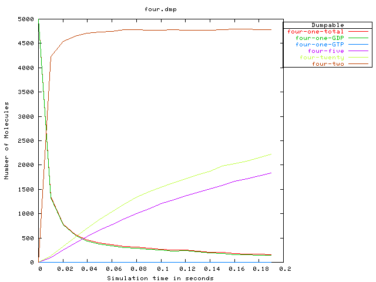
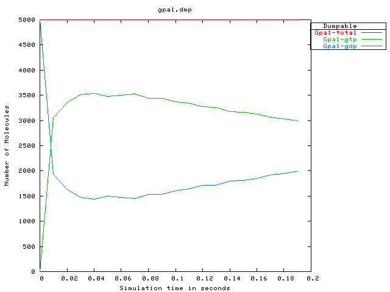

This demo shows two things. First, it is yet another demonstration of export of a reaction network from moleculizer to another simulation tool. More importantly, it shows how a simulation may be distorted by dumping the reaction network too early in the simulation.
This simulation, a version of the large "scaffold" simulation of the part of the alpha pathway from the receptor down to Fus3 phosphorylation, has 335 species and 670 reactions at time 0.01 sec. when state is dumped, but by time 0.2, when the simulation is over, it has 1591 species and 3510 reactions. Hence, as the simulation progresses and the moleculizer simulation adds more and more new species and reactions, we see a disparity between the moleculizer simulation and the odie simulation gradually appear.
To save time running the demo, the moleculizer simulation has been run ahead of time and its reaction network transformed. (On my machine, this shortened version of the scaffold demo takes moleculizer about 1.1 minutes, generating about 200 thousand reaction events.)
The odie input file made by transforming moleculizer's reaction network (state dump) must be edited a little by hand to set odie-specific input parameters; this process has been omitted from the demo also.
The first pair of output plots, respectively from moleculizer and odie, shows species from the early receptor part of the pathway simulation; it is the same as from the receptor demo. Alpha factor is introduced at the beginning of the simulation, instead of waiting for pathway components to equilibrate, because odie has no provision at this time for introducing reactants in the course of ODE solution.
Please consult the "receptor" demo for a fuller explanation of this output.
From moleculizer we get the following:
and from odie, we get the following:

The next pair of plots shows the GTP/GDP binding status of the Gpa1 component of the g-protein coupled receptor mechanism. Again, please consult the "receptor" demo for a fuller explanation of this output.
From moleculizer we get the following:
and from odie, we get the following:

Finally, we have a display of the species involved with the scaffold complex: the scaffold protein Ste5, along witht the scaffold kinases Ste11, Ste7, and Fus3. The membrane-bound kinase Ste20 also appears early in the kinase cascade.
From moleculizer we get the following:

and from odie, we get the following: